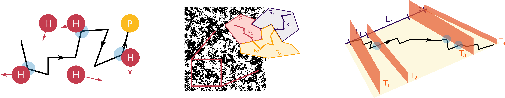

Anomalous diffusion theory
In the early years of my research career, as a Master student in the QOT group at ICFO, I was focused on developing theoretical models to decipher anomalous diffusion. The goal of this project was to understand which may be the sources of anomalous diffusion in complex environments. We proposed three different models, each focusing on different particle-environment interactions:

Trapping in crowded environments
In our first paper , we studied the diffusion of a particle (the prey) in a crowded environment (the hunters). Each time a prey hit a hunter, the former was immobilized for a certain time, drawn randomly from a probability distribution function. As we show in the paper, such model converges to a continuous time random walk (CTRW), a very well known anomalous diffusion model, able to describe a myriad of experimental observations and showing rich characteristics such as non-ergodicity, non-gaussinity and ageing!
Diffusion in critical environments
Prior to my arrival to QOT@ICFO, two big papers where released ( this and this ). There, they proposed a novel diffusion model and showed its suitability to describe the anomalous diffusion of particles in biological environments. The model considers a particle that changes its diffusion coefficient either as a function of time or position. If the distribution of coefficients and residence times follow a particular distribution, then the particle will diffuse anomaly.
In our paper we try to understand which kind of environments give rise to such distributions. In particular, we use an Ising model to describe the environment and show that only at criticality and for an infinite system the particule will truly show anomalous diffusion. If not, there is a transient period in which the particle diffuses anomaly, but then normal diffusion is recovered.
Moving through partially transmitting boundaries
In our last paper on the topic we studied the effect of partially transmitting boundaries and their potential to induce anomalous diffusion. The recipe is easy: a particle moves through a network of compartments of varying size, whose boundary are partially transmitting. The transmittance of the boundary is stochastic: each boundary has it's own value. In the paper, we showed that for certain distributions of compartment sizes and boundary transmittances, a particle that was originally diffusing normally will show a *macroscopic* anomalous diffusion behaviour!